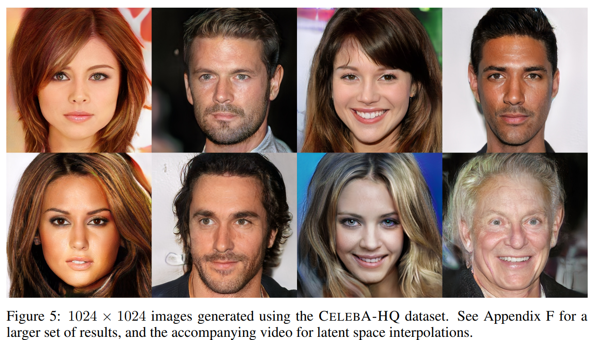

Making Neural Nets Learn From Each Other

In a GAN, one net (the generator) tries to fool another net (the discriminator) using generated inputs meant to mimic the training data.
Analogy: a forger that tries to get better and better at mimicking someone else's handwriting by trying to fool a cop.
The generator references the training data to create a similar but different sample; it uses the response from the discriminator in order to see if and how it should improve.
The discriminator is tasked with correctly labelling both the training data and the generated fakes. By feeding the ground truth inputs throughout training, we can prevent its perception of real vs. fake from going astray.
GANs can be used to generate samples that seem like they were drawn from the same distribution as the training samples.
In other words, they can be used to create outputs that seem strikingly similar to the training data, but isn't the same.
This makes it popular for applications like data augmentation, super-resolution, style-transfer, and face generation, among others.
Difficulties in Training and Evaluation
Research is still being done to improve the stability and convergence of GANs to generate more realistic results. nVIDIA recently proposed the idea of progressively growing the nets of both the generator and the discriminator, which seems promising (results below).
Mode Collapse: a generator may learn to exploit the discriminator by focusing on generating data from certain distributions over others found in the training data.
Generative models aim to learn the probability distributions of the training data. Once the distribution is approximated, new samples that appear to come from the same distributions as the training data can be generated.
Therefore, often it is the Wasserstein distance between distributions that is optimized during training.
Currently, most evaluation is usually limited to performing additional classifications tasks, or qualitatively evaluating results in a cherry-picking way.
Evaluation Metrics

A GAN's discriminator can be evaluated using the area under its ROC curve (larger the better) against the generated images.
Structure Similarity (SSIM) can be used to measure the diversity between the generated images for detecting mode collapse.
Distribution Difference: evaluate the difference between the distributions of the fake data and the real data.
Popular Papers

["Photo-Realistic Single Image Super-Resolution Using a Generative Adversarial Network", Ledig et al. CVPR 2017]

Style Translation ["Unpaired Image-to-Image Translation using Cycle-Consistent Adversarial Networks", Zhu et al. ICCV 2017]

Generated images of fake celebrities ["Progressive Growing of GANs for Improved Quality, Stability, and Variation", Karras et al. ICLR 2018]